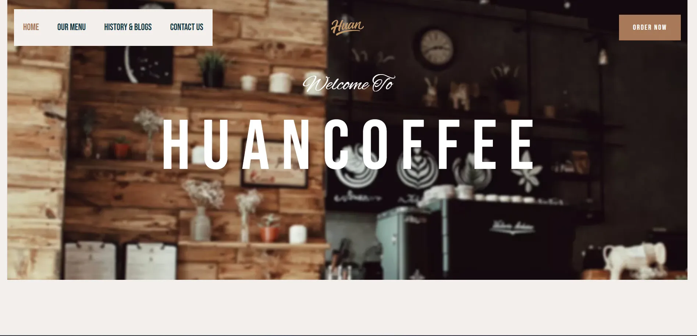
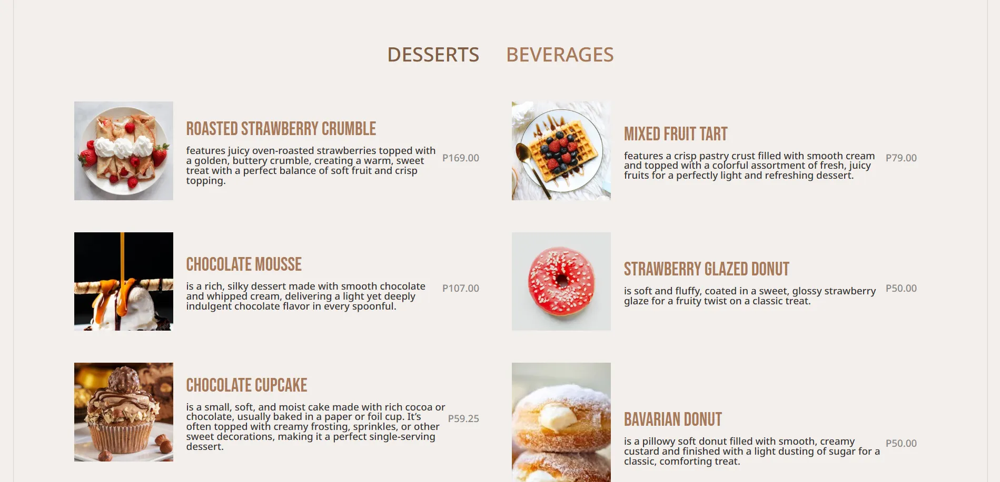
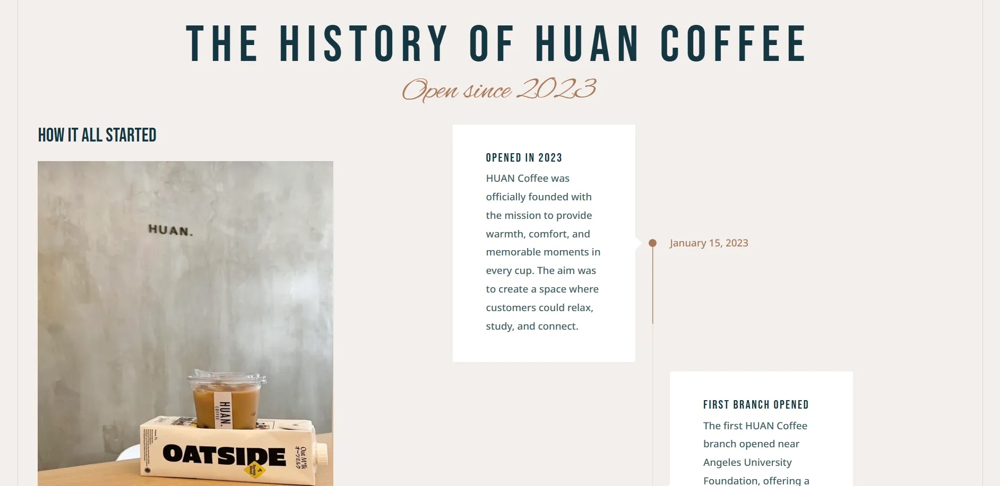
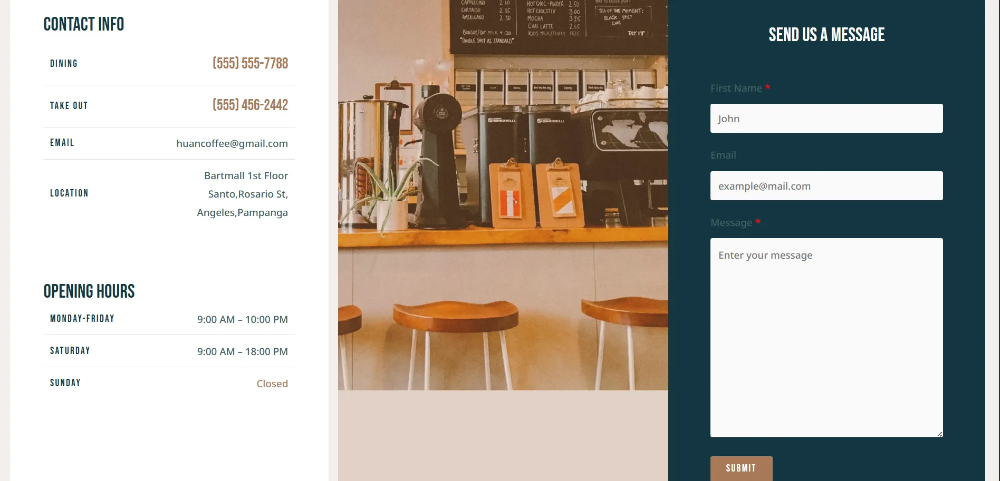

Huan Cafe
WordPress website that promotes a coffee shop named Huan Coffee.
Walkthrough Jump to a feature in the demo




PURPOSE
This is an online shop designed to promote a specific café located in Angeles City, Pampanga. The primary purpose of the website is to expand the café's reach and strengthen its brand presence by establishing a strong online platform. Through this website, customers can conveniently explore the café's menu, learn about its story and offerings, and stay updated on promotions, events, and special deals. By creating an accessible and engaging digital presence, the online shop helps attract new customers while maintaining connections with existing ones.
CORE FEATURES
- Calm and relaxing website for users.
- Detailed lists of menu being offered in the cafe itself.
- Accessible in the internet.
- High level of SEO, the website is easily searchable
TECHNOLOGIES USED
HTML / CSSCore technologies used to structure and style the website
JavaScriptProvides interactive and dynamic functionality across the website
HostingerHosting provider used to manage the server and website deployment
WordpressContent management system used to build and manage the website
TEAM
 Satwinder Jeerh
Satwinder Jeerh Mark De Jesus
Mark De Jesus Redge Galang
Redge Galang Karl Guiao
Karl Guiao